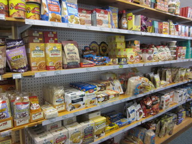
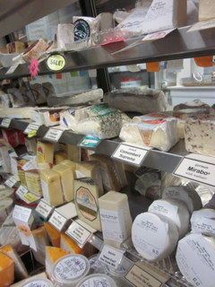
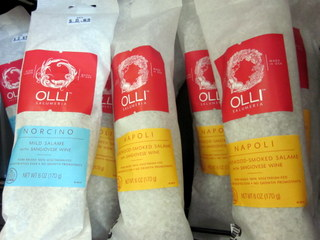
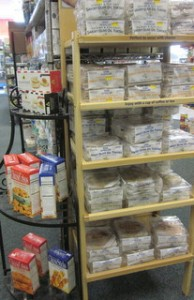

Products
New Products
Add new products here...
Gluten-Free
We have a large variety of ever changing gluten-free products. As someone with celiac disease, Hannah, our grocery orderer for the gluten-free products, loves to try new and improved goodies. Let her or another member of our staff know if you can’t find your favorites and we’ll see if we can get it. We try to stock a good amount of baking, cooking, breakfast and snack items to replace those with gluten. We are also in the process of tagging the other aisles with blue “GF” signs for items that have “Gluten-Free” on their packaging for easy shopping.

Gourmet Foods
At Eats, we strive to provide the very best in gourmet products. Satisfy your chocolate craving with our premium dark or milk chocolates, or check out our wide array of olives, both packaged and in bulk. We package many of our products ourselves so we can provide the highest quality products at reasonable prices. While we’re getting your bulk Kalamata olives or feta, be sure to sample the many cheeses that fit the “gourmet” billing. To complement our fine cheese selection, we also offer carefully-chosen crackers. While remaining loyal to old mainstays, we are always on the lookout for new, quality crackers and accoutrement.
  